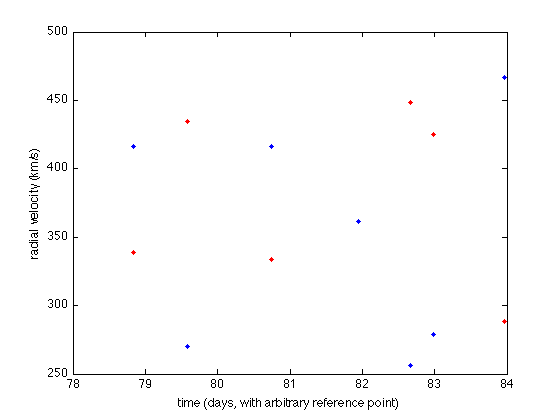
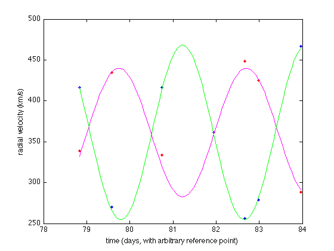

Fitting model to data
Assuming now you have values read from plots in two arrays (relative strength of features signifies which star is which)
bin1lambda = [...]; bin2lambda = [...];
and have them transfered to corresponding radial velocities using the Doppler equation:
vr1 = 2.99792*1e5* (bin1lambda - ... ; vr2 = ... ;
We also know the tracking of Julian date (subtracted off constant of time) from the handout:
t = [78.831,79.581,80.742,81.943,82.670,82.982,83.960];
We can plot these data out to see how they look like:
figure(1)
clf;
plot(t,vr1,'.r')
Don't forget to use hold to retain the current plot:
hold on plot(t,vr2,'.b')
You can also add labels to remind yourself:
ylabel('radial velocity (km/s)') xlabel('time (days, with arbitrary reference point)')
Now let's think about fitting these data into equations. MATLAB has this handy function fit to do all the hard work for you, but you need to "guess" what kind of equation your data look like. You can find more details by typing:
help fit
FIT Fit a curve or surface to data.
FO = FIT(X, Y, FT) is a fit object that encapsulates the result of fitting
the model specified by the fittype FT to the data X, Y.
... ...
The simplest periodic formula is sinusoid. To see what kind of fitting model can be used in fit, try
cflibhelp sin
SUM OF SINE FUNCTIONS
MODELNAME EQUATION
sin1 Y = a1*sin(b1*x+c1)
sin2 Y = a1*sin(b1*x+c1)+a2*sin(b2*x+c2)
sin3 Y = a1*sin(b1*x+c1)+...+a3*sin(b3*x+c3)
...
sin8 Y = a1*sin(b1*x+c1)+...+a8*sin(b8*x+c8)
For the binary star system, the movement of the stars must be a simple, first-order sinusoid, theoretically. So we choose sin1 as our model.
However, since sin1 is the simplest model, it automatically assumes that Y is oscillating around zero, or Y(MAX)=-Y(min). Therefore, our data must be shifted first before we apply the fit function. This is also the "offset" of the system; i.e. the two stars should have the same value of offset (think about it!). We use data from spectrum 4:
ydev = vr1(4);
It doesn't matter if you want to use vr2(4) instead of vr1(4); they are the same (you can use this to validate your data).
Finally we have two data sets with zero median Y-value:
vr1n = vr1 - ydev; vr2n = vr2 - ydev;
Now we can apply the fit function with model sin1. Note that the input vectors of fit must be column vectors, but in this example both t and vr1n (or vr2n) are row vectors. So don't forget to use the apostrophe operator (') to turn a row vector into a column vector:
vrfit1 = fit(t', vr1n', 'sin1');
vrfit2 = fit(...);
The results, vrfit1 and vrfit2 have special format that includes values of a1, b1, c1 and the information of the model used in fit:
vrfit1 vrfit2
vrfit1 =
General model Sin1:
vrfit1(x) = a1*sin(b1*x+c1)
Coefficients (with 95% confidence bounds):
a1 = ... (..., ...)
b1 = ... (..., ...)
c1 = ... (..., ...)
vrfit2 =
General model Sin1:
vrfit2(x) = a1*sin(b1*x+c1)
Coefficients (with 95% confidence bounds):
a1 = ... (..., ...)
b1 = ... (..., ...)
c1 = ... (..., ...)
You can use some other variables to save the fitting results:
a1 = vrfit1.a1; b1 = vrfit1.b1; c1 = vrfit1.c1;
a2 = vrfit2.a1; b2 = vrfit2.b1; c2 = vrfit2.c1;
Now we can plot the fitting formula on the data. Note that you need enough points (say, 100 points) to get a smooth curve. So, instead of t in the data set (which only has 7 elements), you can create a time vector between the minimum value of t (i.e. t(1)) and the maximum value of t (i.e. t(7)), and has length = 100:
tforsin = linspace(t(1),t(7),100);
The fitting formula is
yfit1 = a1*sin(b1*(tforsin)+c1) + ydev; yfit2 = a2*sin(b2*(tforsin)+c2) + ydev;
Now you can plot the curve to see if your fitting formula is a good one!
figure(1); plot(tforsin, yfit1, 'm'); plot(tforsin, yfit2, 'g');